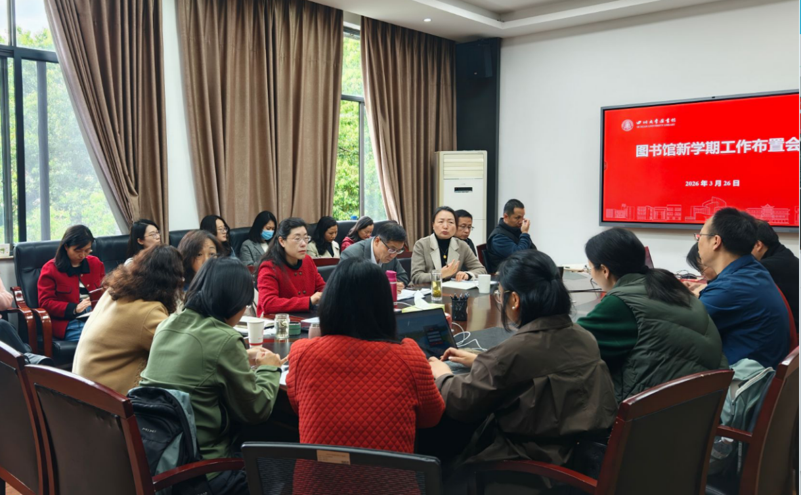

学院通知 · 科研创新
图书馆召开2026年新学期工作布置会
发布时间：2026-03-30 09:05:07
3月26日上午，四川大学图书馆2026年新学期工作布置会在工学图书馆五楼会议室举行。会议由馆长兰利琼主持，图书馆领导班子全体成员、全体部门干部参会。 兰利琼馆长传达了学校新学期工作布置会精神，围绕“十五五”开局之年学校总体部署、重点任务要求，系统部署图书馆新学期重点工作。她指出，一年之计在于春，全体馆员要以“春耕正当时”的劲头推动各项工作落实。她强调，面对数智化时代和人工智能技术发展带来的挑战，图书馆必须主动作为、自加压力，深度嵌入学校教学科研、学科建设和文化传承等中心工作，用智慧和力量推动图书馆事业高质量发展。 随后，各分管馆领导分别就主管领域的新学期重点任务及需要相关部门协同创新的工作进行了具体安排。 秦远清书记在总结讲话中强调，全体干部要团结协作、尊重沟通、自加压力、积极作为。他指出，要深刻理解教育强国和学校“双一流”建设对图书馆的使命要求与职责担当，要了解图书馆外部发展环境和服务坐标，精准把握不同层次、不同学科师生用户的实际需求，坚持以用户满意度为标尺检验工作成效，以全局思维和开放包容的姿态，综合施策，实现协同增效。他希望全体干部切实增强宗旨意识，始终秉持“师生为本、服务至上”理念，在相互成就中实现快乐工作、幸福生活。 本次会议明确了新学期图书馆工作的总体思路和重点任务，凝聚了发展共识，激发了奋进力量。 会议要求，全体馆员锚定学校“双一流”建设和人才培养核心目标，以更坚定的决心、更务实的行动投身工作，全力推动图书馆事业在新征程上实现高质量发展。 文字：党政办公室 朱元南 图片：党政办公室 肖敏
